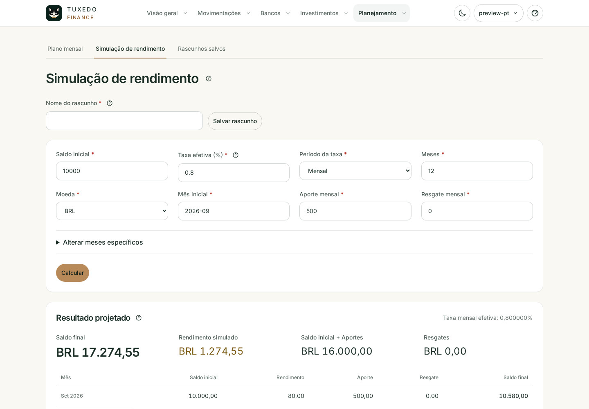

Prévia da interface
Conheça suas finanças além da planilha.
Explore a interface real do Tuxedo Finance antes de instalar. Este tour apresenta fluxo de caixa, relatórios, transações cotidianas, bancos, investimentos e planejamento.
Atividade mensal e contas atuais.
O mês selecionado separa a atividade registrada do que está planejado, mantendo receitas, despesas, aportes e resgates distintos. Os saldos atuais das contas e as próximas faturas permanecem independentes do mês selecionado.


Padrões sempre ligados aos números.
Gráficos renderizados no servidor comparam evolução do saldo, fluxo de caixa, instrumentos, categorias, parcelas e despesas recorrentes sem esconder os valores de origem.

Cada evento classificado e pesquisável.
Receitas e despesas preservam categoria, instrumento de pagamento, recorrência, parcelamento, data da transação e mês de cobrança.

Contas, cartões e moedas em contexto.
Veja o valor disponível para o mês entre contas e caixa remunerado. Reserve parte de uma conta ou exclua seu saldo positivo do planejamento, mantendo o saldo real visível.

Investimentos e caixa do mês têm papéis diferentes.
Separe as posições da carteira do caixa remunerado reservado para pagar o mês. Aportes, retiradas e rendimentos reais preservam histórico, quantidades, taxas e contas de origem e destino.

Experimente um cenário antes de realizá-lo.
Estime o orçamento mensal com parcelas futuras e despesas recorrentes ou simule a evolução do saldo com aportes, retiradas e uma taxa efetiva. Salve rascunhos com nome, reabra e compare cenários sem alterar os registros financeiros.
